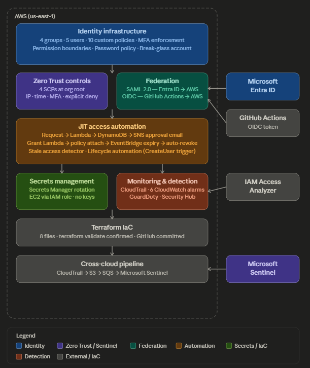

“Six months later I audited my own access system. A grant meant to last 5 minutes was still active.”
SecureCorp AWS IAM Lab
-
The goal
Run identity for a made-up four-department company: who can sign in, what each team can touch, and how someone gets temporary extra access.
-
What I built
Single sign-on from Entra ID to AWS, keyless GitHub deployments with OIDC, group-based roles with MFA and permission boundaries, and a request-and-approve flow for temporary access, all automated with Lambda.
-
What I found
The step that removes access never ran. The audit log still said "approved," so everything looked fine. Lesson: check what's actually attached, not what the function reported.
Tech stack
- AWS IAM
- Identity Center
- Entra ID
- Lambda
- DynamoDB
- EventBridge
- CloudTrail
- Python
6
Lambda functions written
2
sign-in federations (SAML, OIDC)
6
security alarms on CloudTrail
170
days a 5-min grant stayed live
